Tiramisu fraises spéculoos

Hello les gourmands 🙂 Aujourd’hui je vous retrouve avec une toute nouvelle recette que j’ai particulièrement adoré! Il s’agit de la recette de tiramisu fraises spéculoos dans des petites jarres. Des fraises, des fraises, encore et toujours des fraises mais quand on aime on ne compte pas!
Comme vous le savez (ou pas d’ailleurs) je propose presque tous les mois une association un peu nouvelle ou du moins une association que l’on a peu l’habitude de voir avec du cidre et à l’aube de l’été les cidres Val de Rance ont eu envie de nous emmener en pique-nique! Plutôt chouette non? Je ne sais pas vous mais moi les pique-niques j’adore ça (sauf que je suis ultra allergique alors en ce moment je n’en profite qu’à moitié!), s’asseoir au pied d’un arbre, apporter un grand drap, préparer des salades, sandwichs, cakes (ou comme ici un tiramisu), faire une sieste, lire un livre, écouter les rires des enfants au loin et regarder les oiseaux voler au-dessus de nos têtes. Bref je suis fan! Ce week-end nous n’avons pas fait un « vrai pique-nique » mais plutôt un goûter pique-nique avec ces tiramisus fraises spéculoos, quelques fruits et notre cidre. L’occasion de profiter du beau temps et de prendre quelques jolies photos dans le parc près de chez nous. Comme je vous le disais ma « petite » allergie ne m’a pas laissé vraiment tranquille mais j’ai quand même pu en profiter et les tiramisus sont partis comme des petits pains! Si vous n’aimez pas les spéculoos vous pouvez les remplacer par des biscuits cuillère classique trempés rapidement dans dans le coulis de fraise et pour l’avoir fait je peux vous dire que c’est aussi bon. Je me suis inspirée de la recette de Christophe Felder pour faire cette recette alors autant vous dire que vous pouvez y aller les yeux fermés vous ne serez pas déçus :-). Pique-nique ou pas vous pouvez présenter cette recette de tiramisu fraises spéculoos dans des verres, verrines, ou dans un plat à dessert pour un format plus familial. Si vous testez cette recette n’hésitez pas à me faire un retour, j’aime recevoir vos petits messages et savoir que vous vous êtes régalés!! A très vite et bonne semaine à tous!!
Ingrédients
- Spéculoos - 10
- Fraises - environ 50 g ( tout dépendra de leur taille)- Il faut 3 fraises par jarres
- Mascarpone - 370g
- Oeufs - 3
- Sucre - 100g
- Fraises - 200g
- Sucre glace - 1 càs
- Jus de citron - 1 càs
Instructions
- Séparer les blancs des jaunes
- Battre les jaunes d’œufs avec la moitié du sucre
- Battre jusqu'à obtenir une crème blanchâtre et crémeuse
- Incorporer le mascarpone et mélanger jusqu’à obtenir un mélange homogène
- Dans un saladier, monter les blancs en neige
- Une fois qu'ils commencent à mousser ajouter le restant de sucre
- Battre jusqu'à obtenir des blancs bien fermes
- A l'aide d'une spatule, incorporer les blancs d’œufs petit à petit (en 3 fois) au mélange contenant le mascarpone
- Incorporez-les délicatement pour ne pas les casser et conserver de la légéreté
- A l'aide de la spatule "faites des ronds" pour bien les incorporer
- On veut obtenir une crème bien homogène
- Conserver au frais pendant le reste de la préparation
- Écraser les spéculoos de manière à obtenir des miettes de spéculoos
- Couper les fraises en deux - Il en faut 3 par jarres (pour des jarres de 200ml)
- Placer les demi-fraises le long de la paroi des jarres
- Verser quelques miettes de spéculoos au fond
- Préparer le coulis de fraises : mélanger le sucre glace le citron et les fraises. Mixer le tout jusqu'à obtenir un beau coulis
- Dans la jarre par-dessus les spéculoos écrasés verser de la crème au mascarpone
- Veiller à ce que les fraises se collent bien sur les parois de la jarre pendant que vous versez la crème
- Versez de la crème de manière à recouvrir presque entièrement les fraises
- Saupoudrer de miettes de spéculoos
- Ajouter une bonne cuillère à soupe de coulis de fraises par-dessus
- Recouvrir avec le restant de crème
- Attention si vous comptez fermer les jarres ne les remplissez pas jusqu'en haut car vous ne pourrez pas les refermer sans les faire déborder
- Décorer vos tiramisus de coulis de fraises et de spéculoos
- Placer au frais minimum deux heures avant de servir
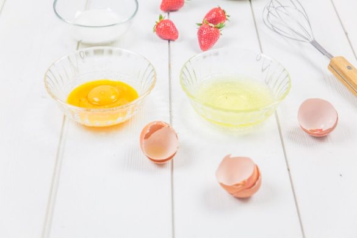
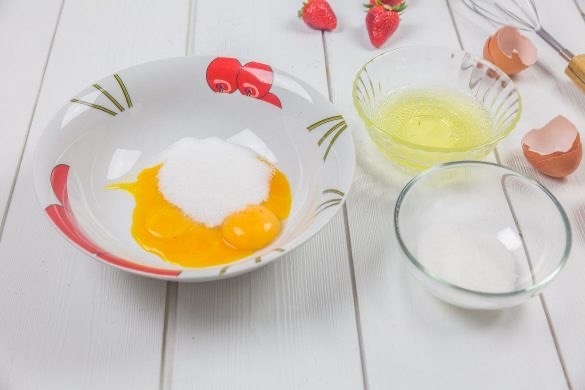
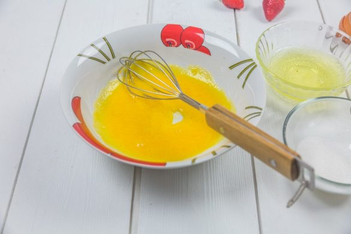
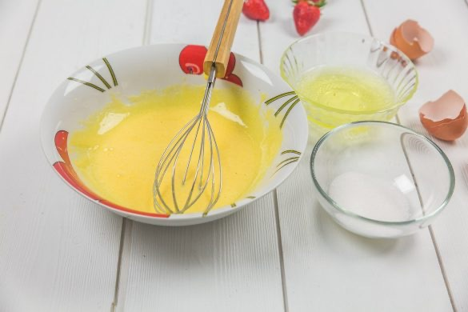
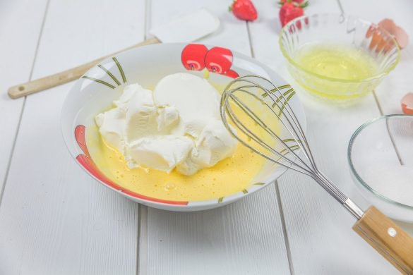
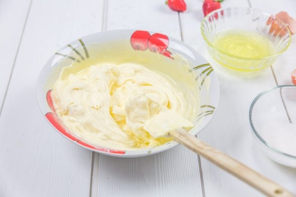
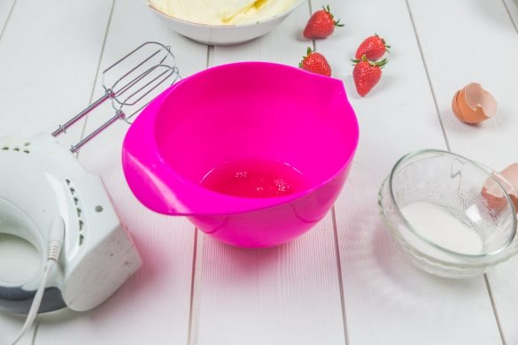
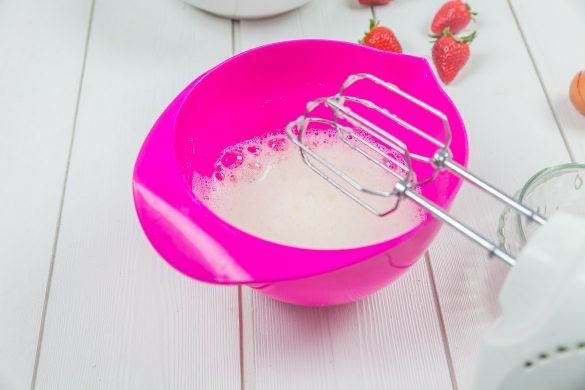
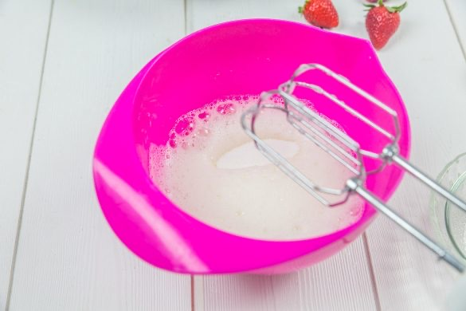
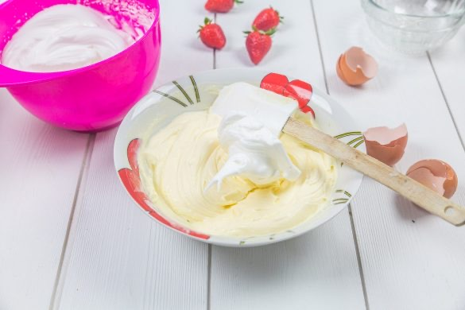
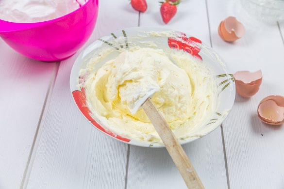
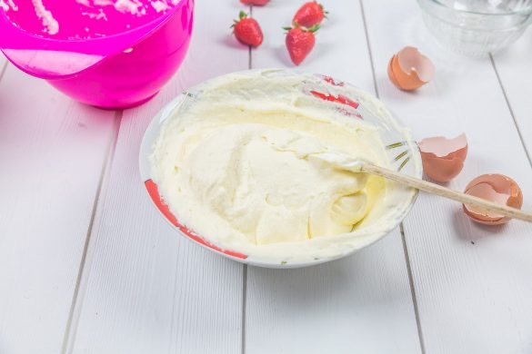
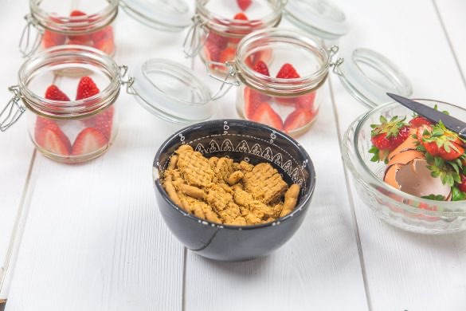
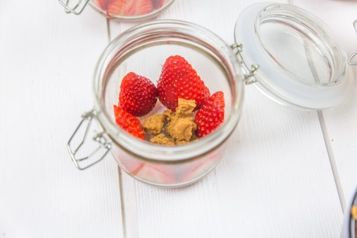
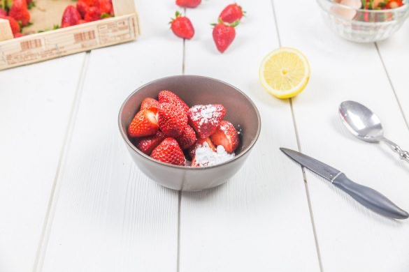
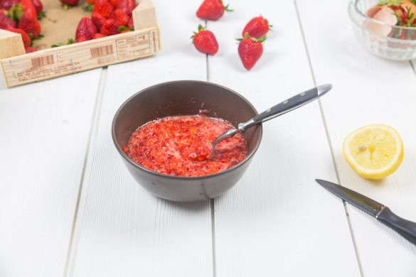
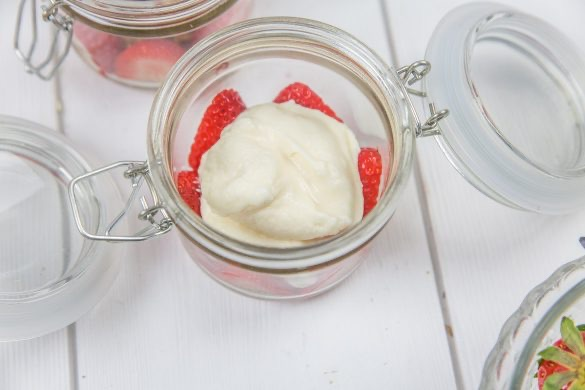
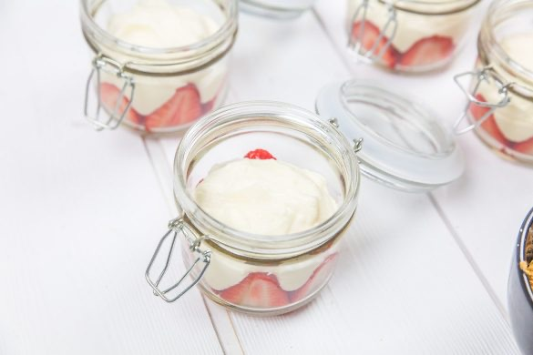
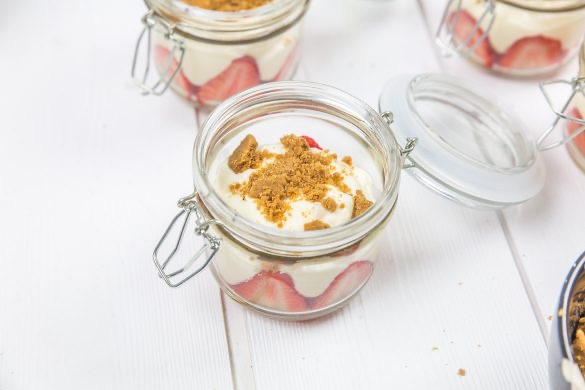
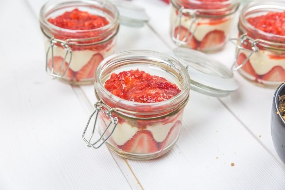
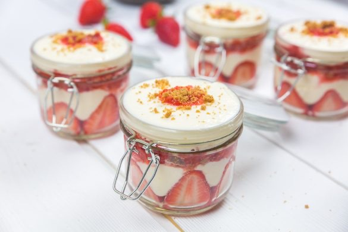
Les tips de la communauté
Énorme succès avec nombreux commentaires élogieux. La recette simple convient parfaitement. Les commentaires fournissent des conseils pratiques sur la préparation. Excellente accueil pour ce classique revisité.
Astuces
- Monter les blancs en neige le jour même (ne pas préparer la veille)
- Préparer la crème la veille et remontage le jour suivant possible
- Utiliser des fraises de saison du producteur local, c'est essentiel
- Doubler la quantité de fraises (500g pour 6 desserts) pour moins de coulis
- Peut se préparer en bocaux ou tasses pour un rendu personnalisé
- Encore meilleur le lendemain
Variantes suggérées
- Remplacer le mascarpone par du fromage blanc pour une version allégée
- Augmenter les fraises et réduire les autres couches
Ajustements signalés
- quand même les préparer à l’avance pour les faire reposer au frais donc vous pouvez envisagez de les faire la veille ou le matin même! Vous me direz si c’était bon! Très bonne fin de journée 🙂